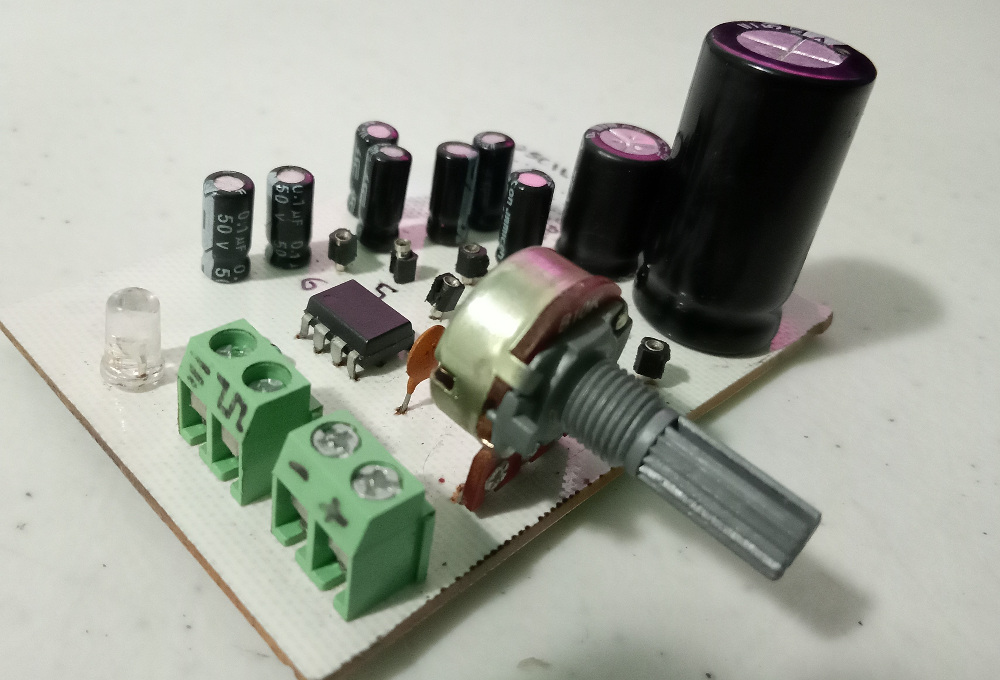

Oscilador monoestable [.1Hz - 100kHz]

El objetivo de este proyecto es conseguir una onda cuadrada con una frecuencia variable desde 0.1Hz hasta 100kHz. Para eso se usa un jumper que conecta el circuito integrado NE555 a 6 capacitores equivalentes que dan los rangos de oepración del circuito.
El oscilador tiene 6 rangos.